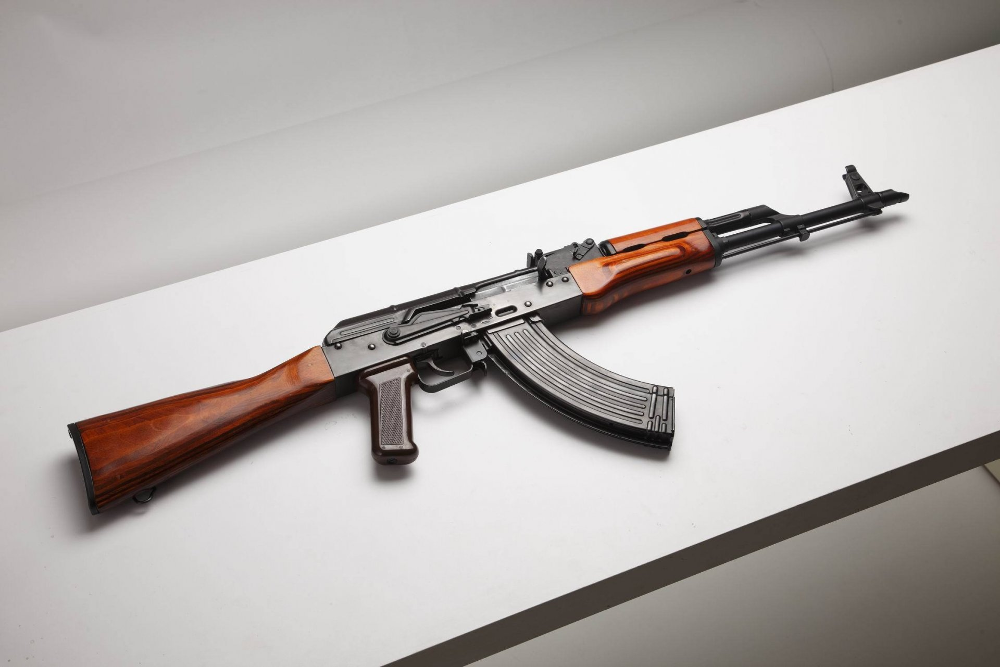

АК и его модификации являются самым распространённым стрелковым оружием в мире, он включён в Книгу рекордов Гиннесса: насчитывается более 100 млн единиц этого автомата, он состоит на вооружении 106 стран мира
этому типу (включая лицензионные и нелицензионные копии, а также сторонние разработки на базе АК) принадлежит до 1/5 всего имеющегося в мире стрелкового огнестрельного автоматического оружия[6]. На основе 7,62-мм автомата Калашникова создано семейство боевого и гражданского стрелкового оружия различных калибров, включая автоматы АКМ и АК74 и их модификации, ручной пулемёт Калашникова, карабины и гладкоствольные ружья «Сайга» и другие, в том числе за рубежом СССР. Общее количество всех разновидностей автомата Калашникова на хранении и вооружении ВС РФ на 2013 год составляло 17 000 000 единиц
Биография Михаила Тимофеевича КалашниковаИстория появления на свет автомата Калашникова началась в 1943 году, когда советские войска захватили на Волховском фронте первые образцы германских автоматических карабинов MKb.42(H) под промежуточный патрон 7.92х33. Летом 1943 года на совещании в Народном комиссариате обороны по результатам изучения трофейного автомата и американского карабина M1 было принято решение о необходимости срочной разработки своего комплекса оружия под промежуточный патрон, обеспечивавшего пехоте возможность эффективного ведения огня на дальностях порядка 400 метров, за пределами возможностей существовавших пистолетов-пулеметов. Разработка нового комплекса была начата с создания нового патрона, и уже в ноябре 1943 года всем организациям, занимающимся разработкой стрелкового оружия, были разосланы его чертежи и спецификации. Этот патрон, разработанный конструкторами Семиным и Елизаровым в ОКБ-44, имел бутылочную гильзу длиной 41мм и снаряжался остроконечной пулей калибром 7.62мм и массой 8 граммов со свинцовым сердечником. Разработки оружия под новый патрон были начаты по нескольким направлениям — ручной пулемет, автомат, самозарядный карабин и карабин с ручной перезарядкой. В середине 1944 года комиссия по испытаниям отобрала для дальнейшей отработки автомат конструкции Судаева, получивший индекс АС-44. По результатам его доработки было принято решение о выпуске малой серии и проведении войсковых испытаний, которые прошли весной-летом 1945 года как в группе советских войск в Германии, так и в ряде частей на территории СССР. Общий опыт испытаний оказался положительным, однако войска высказали твердое требование по снижению массы автомата. В результате было принято решение провести еще один тур испытаний в начале 1946 года. Здесь на сцену и выходит сержант Калашников. После ранения в 1942 году он в ходе лечения разработал пистолет-пулемет оригинальной конструкции, и в результате был направлен для продолжения службы на Научно-испытательный полигон стрелкового и минометного вооружения (НИПСМВО) в городке Щурово, неподалеку от Москвы. Здесь Калашников в разработал сперва ручной пулемет под винтовочный патрон (в 1943 году) а затем и самозарядный карабин под новый промежуточный патрон (в 1945 году), в конструкции которого прослеживалось явное влияние американской винтовки M1 Garand. В ноябре 1946 года проект Калашникова был, в числе некоторых других, одобрен для изготовления опытных образцов, и конструктор был откомандирован в Ковров на завод №2 для непосредственного изготовления опытных автоматов. Первый автомат Калашникова, известный как АК-46, имел автоматику с коротким ходом расположенного над стволом газового поршня и поворотным затвором по типу Гарандовского. Автомат также имел конструкцию с разъемной ствольной коробкой, и раздельные предохранитель и переводчик режимов огня на левой стороне оружия. В декабре 1946 года автомат Калашникова АК-46 вышел на испытания, где его главными конкурентами стали тульские автоматы Булкина АБ-46 и автомат Дементьева АД. Затем последовал второй тур испытаний, после которого АК-46 был признан комиссией непригодным для дальнейшей отработки. Невзирая на это решение, Калашников при поддержке ряда членов комиссии полигона добился пересмотра решения и получил одобрение на дальнейшую доводку своего автомата. Вернувшись в Ковров, Калашников принял решение о радикальной переработке своей конструкции, в чем ему активно помогал конструктор Ковровского завода Зайцев. В результате к следующему туру испытаний был фактически создан новый автомат, имевший с АК-46 минимальное сходство. Зато по максимуму учитывавший высказанные к предыдущему образцу замечания и рекомендации от испытательной комиссии полигона. В результате на очередной тур испытаний, проводившийся в декабре 1946 - январе 1947, вышли три автомата - слегка доведенные образцы Дементьева и Булкина и фактически новый автомат Калашникова. По результатам испытаний ни один образец полностью не удовлетворил тактико-техническим требованиям - автомат Калашникова, будучи наиболее надежным из всех трех, показал недостаточную кучность стрельбы, а единственный автомат, полностью удовлетворивший требованиям по кучности - ТКБ-415 системы Булкина, имел проблемы с надежностью и живучестью ряда деталей. На заседании испытательной комиссии по результатам очередного этапа конкурса в конце концов было принято решение о рекомендации автомата Калашникова к войсковым испытаниям как наиболее надежного, а доведение его до требований по кучности стрельбы было отложено на неопределенный срок. Это решение можно считать оправданным с той точки зрения, что в сложившейся на тот момент ситуации Советской армии был бы гораздо полезнее надежный, но не очень точный автомат в ближайшем будущем, чем надежный и точный автомат неизвестно когда. Производство новых автоматов было решено налаживать на заводе в Ижевске, куда Калашников и был командирован из Коврова в конце 1947 года. Первые партии новых автоматов были собраны в Ижевске в середине 1948 года, а в конце 1949 года по результатам войсковых испытаний новый автомат был принят на вооружение Советской армии в двух вариантах под обозначениями "7.62мм автомат Калашникова АК" и "7.62мм автомат Калашникова со складным прикладом АКС" (для воздушно-десантных войск).
Автомат Калашникова 3D